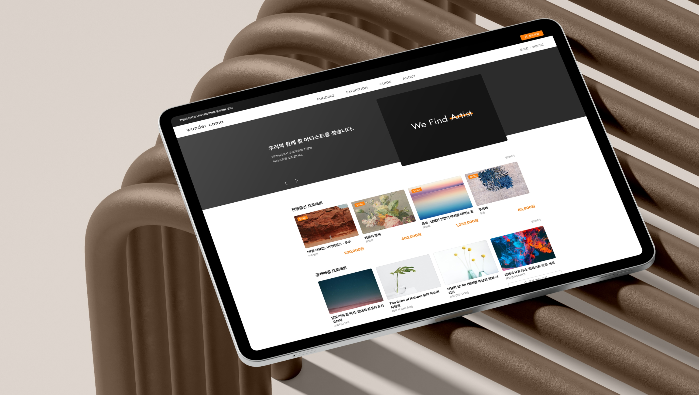
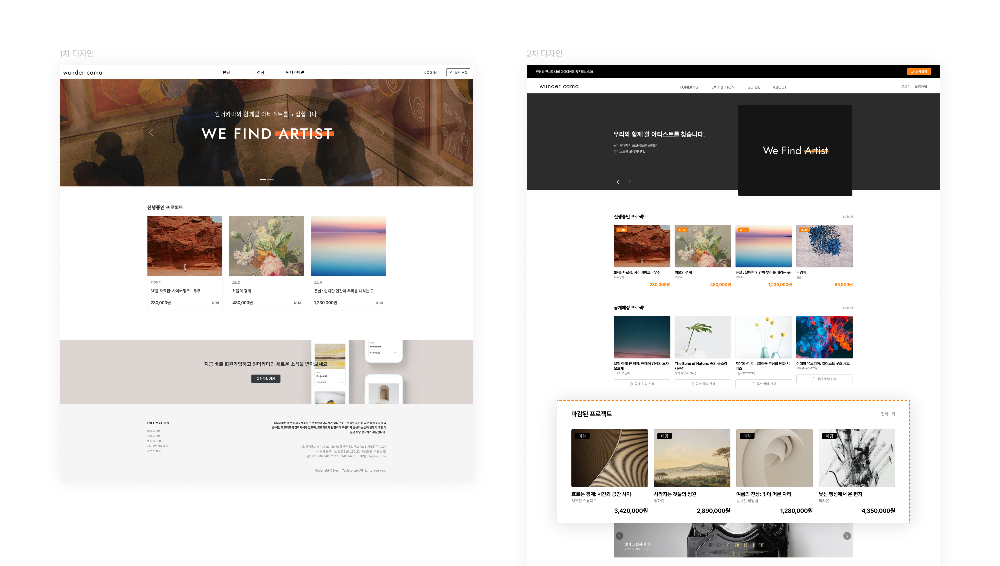
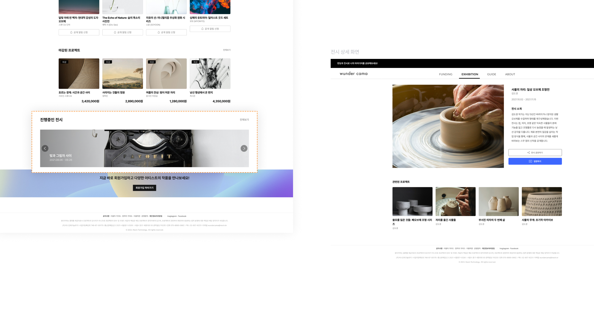
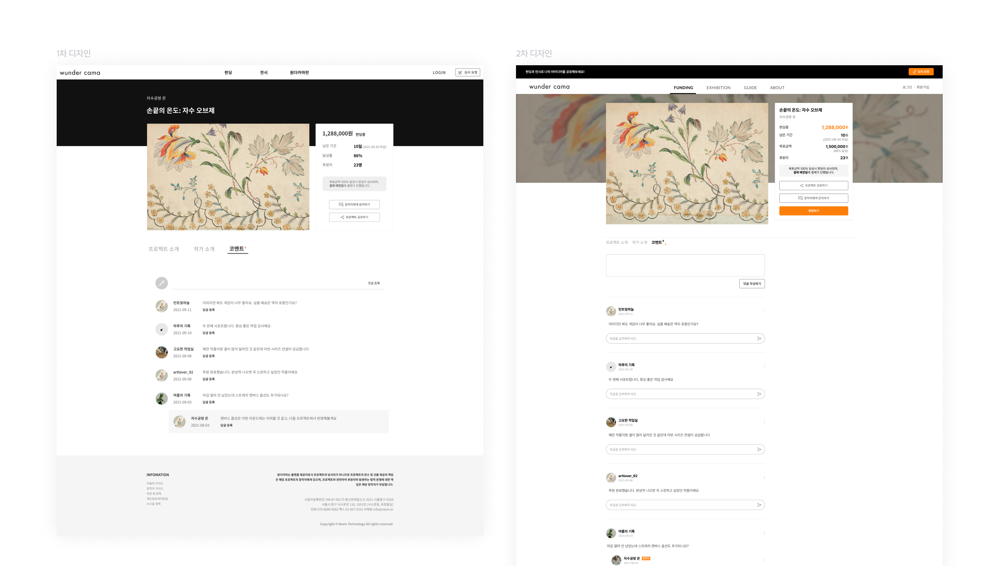
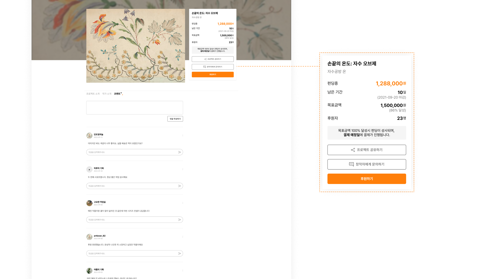
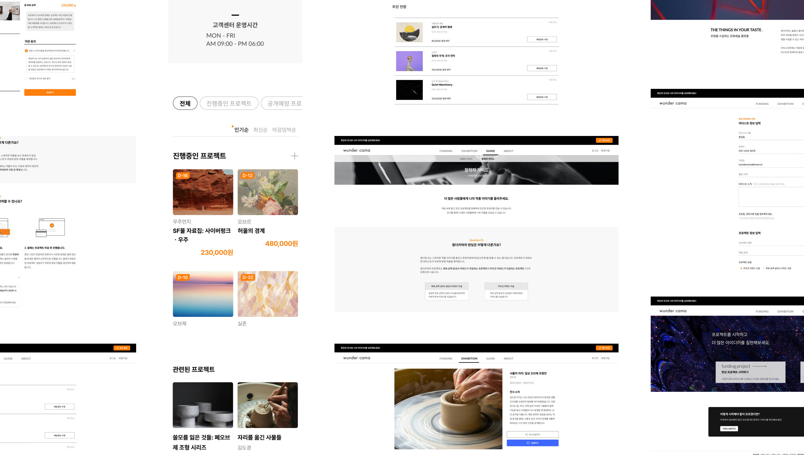

( overview )
1차는 부트스트랩으로 개발이 끝난 사이트에 새 디자인을 입히는 작업으로,
기존 레이아웃을 유지하는 것이 조건이었습니다.
서비스 오픈이 보류된 시기에 콘텐츠 구성과 화면 레이아웃을 다시 검토해
2차 리디자인을 제안하고 진행했습니다.
※ 2차 리디자인은 내부 검토와 개발 반영 전에 프로젝트가 종료되어 적용되지 않았습니다.

( 01 )
콘텐츠 탐색 범위를 넓힌 메인 화면
2차 리디자인에서는 메인에서 탐색할 수 있는 콘텐츠의 범위를 넓혔습니다.
마감 프로젝트까지 탐색 범위 확장

1차에서는 마감된 프로젝트를 사용자 화면에 노출하지 않았습니다. 2차에서는 펀딩이 끝난 뒤에도 작품과 작가를 계속 둘러볼 수 있도록 마감 프로젝트까지 메인에 포함했습니다.
전시를 메인의 주요 콘텐츠로 확장

리워드 성격이 강했던 온라인 전시를 신인 아티스트 소개 공간으로 활용하자는 팀 논의를 반영해, 진행 중인 전시를 프로젝트와 함께 메인에 노출했습니다.
( 02 )
프로젝트 정보와 후원 버튼을 한곳에
1차에서는 작가명과 프로젝트명, 펀딩 정보가 여러 영역에 나뉘어 있어 시선이 분산된다고 봤습니다.
2차에서는 관련 정보를 한 영역으로 모으고, 하단에
있던 후원하기 버튼도 이 영역으로 옮겼습니다.


펀딩 금액과 후원하기 버튼에는 포인트 컬러를 적용해 주요 정보와 행동을 구분했습니다.
( 03 )
그 외 화면
